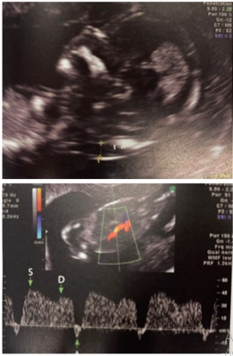
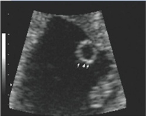
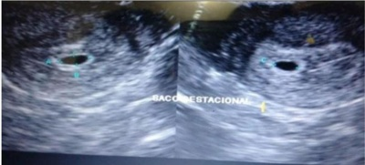
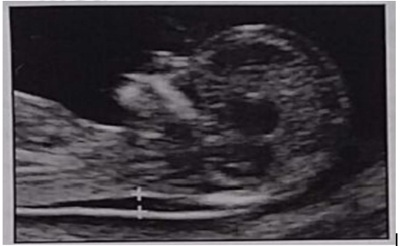

Questão 1 · Ultrassonograf ia no primeiro trimestre · Obstetrícia · Diagnóstico e datação da gestação · 4000185677Sobre o diagnóstico de gravidez e gestação inicial, analise as assertivas abaixo considerando V para verdadeiro e F para falso e assinale a alternativa que apresenta a sequência correta. ( ) A detecção da hCG no sangue ou na urina maternos é a base dos testes endócrinos para o diagnóstico de gravidez. ( ) A medida ultrassonográ ca do comprimento cabeça-nádega (CCN) constitui o índice biométrico mais preciso para estimar a idade gestacional. ( ) Através do sonar, os batimentos cardíacos do concepto são audíveis a partir da 7ª semana de gestação na consulta de rotina de prénatal.
A VVF
B FVF
C FFF
D VVV
E VFV
Revisar: possível letra faltando em enunciado
Questão 2 · Rastreamento de anomalias cromossômicas · Ultrassonograf ia no primeiro trimestre · Obstetrícia · 4000184131Paciente de 41 anos retorna em consulta de pré-natal trazendo o exame realizado com 12 semanas de gestação: translucência nucal: 2,5 mm e imagens apresentadas. Quando comparado à população dessa mesma idade, qual é o significado desse resultado?

A Mantido o risco basal de cardiopatia fetal.
B Maior risco de meningomielocele.
C Maior risco de trissomia.
D Maior risco de espinha bífida.
Questão 3 · Ultrassom em obstetrícia USG · Obstetrícia · 4000183716No que se refere à interrupção terapêutica da gestação de feto anencéfalo, assinale a alternativa correta.
A Um de seus fundamentos jurídicos é o entendimento de que o anencéfalo é uma vida em potencial, portanto, com proteção jurídica, conforme a ADPF 54, votada pelo Supremo Tribunal Federal (STF) em 2012.
B O mencionado procedimento depende de autorização judicial.
C Em conformidade com a Resolução do Conselho Federal de Medicina, para seu diagnóstico, é necessária uma ecografia gestacional com, no mínimo, duas fotografias do feto, uma com a face em posição sagital e a outra com a visualização do polo encefálico no corte transversal evidenciando ausência de calota craniana e de parênquima cerebral.
D A referida interrupção terapêutica independe da idade gestacional.
E De acordo com a Resolução do Conselho Federal de Medicina, para seu diagnóstico, é suficiente uma ecografia gestacional assinada por apenas um médico.
Questão 4 · Ultrassonograf ia no primeiro trimestre · Obstetrícia · 4000183600Considere a imagem abaixo. Nessa imagem ultrassonográfica do final do primeiro trimestre de gestação observa-se feto com

A ausência do osso nasal e pé torto congênito.
B osso nasal adequado e anencefalia.
C ausência de osso nasal e aumento da transluscência nucal.
D osso nasal e transluscência nucal adequados.
E higroma cístico e edema da calota craniana.
Questão 5 · Ultrassom em obstetrícia USG · Obstetrícia · 4000183220Com relação à ultrassonografia obstétrica, assinale a alternativa correta.
A A determinação da idade gestacional com base na ultrassonografia, quando esta é realizada no 1º trimestre de gestação, sempre é mais eficaz do que por meio de fatores clínicos como a data da última menstruação e a data da concepção, nos casos de técnicas de reprodução assistida.
B O espessamento do saco gestacional em torno de dez a doze semanas de gestação representa sinal de alerta para a gestação.
C A ultrassonografia obstétrica é capaz de detectar diversas anomalias fetais, como a acrania, a espinha bífida e a onfalocele, por exemplo.
D A estimativa do peso fetal pode ser realizada pela obtenção do diâmetro biparietal.
E A translucência nucal aumentada no exame morfológico de 1º trimestre de gestação indica que o feto é portador da síndrome de Down.
Questão 6 · Ultrassom em obstetrícia USG · Obstetrícia · 4000182802Primigesta de 20 anos, com 16 semanas de gestação, trouxe ao Ambulatório de Pré-natal uma ultrassonogra a obstétrica mostrando feto com anencefalia. Manifestou o desejo de interrupção imediata da gestação. Qual a conduta mais adequada neste momento?
A Encaminhar a paciente ao Centro Obstétrico para realizar a interrupção da gestação.
B Solicitar nova ultrassonografia e, confirmado o diagnóstico, interromper a gestação.
C Solicitar autorização judicial para interrupção da gestação.
D Negar o pedido de interrupção da gestação, pois a paciente tem menos de 25 anos.
Questão 7 · Ultrassom em obstetrícia USG · Obstetrícia · 4000182737São indicações de realização de exame ecográfico durante a gestação: I. Determinar a localização da gestação (intrauterina ou extrauterina). II. Avaliar sangramento vaginal ou dor pélvica. III. Avaliar colo do útero para risco de nascimento e perda pré-termo. IV. Avaliar massa pélvica. Estão CORRETOS:
A Somente os itens I e II.
B Somente os itens I, II e III.
C Somente os itens II e IV.
D Todos os itens.
Questão 8 · Ultrassom em obstetrícia USG · Obstetrícia · 4000182285A ultrassonogra a é um método seguro e amplamente difundido de avaliação fetal. A indicação para a realização do exame no primeiro trimestre é:
A avaliação de volume de líquido amniótico
B definição de inserção placentária
C diagnóstico de corionicidade
D estimativa de peso fetal
Questão 9 · Relação entre a idade gestacional e achados ultrassonográf icos · 4000181419Cálculo da idade gestacional pela ultrassonograf ia IG USG M.S.S.S., 37 anos, G4P3A0, 3 partos vaginais prévios à termo, idade gestacional de 37 semanas (calculada por ultrassom de 10 semanas), altura de fundo uterino de 31 cm, feto em apresentação cefálica. USG Obstétrica revela peso fetal no percentil 3 para a idade gestacional, e maior bolsão de líquido amniótico 21mm. Doppler das artérias uterinas, cerebral média e umbilical normal. Indique o diagnóstico e conduta
A Trata-se de um feto pequeno para a idade gestacional. Permite-se aguardar a resolução da gestação com até 40 semanas e não está contraindicado o parto vaginal.
B Trata-se de um feto com restrição de crescimento intrauterino estágio 1. Permite-se aguardar a resolução da gestação com até 38 semanas, realizando Doppler semanalmente e não está contraindicado o parto vaginal.
C Trata-se de um feto com restrição de crescimento intrauterino estágio 2. Deve-se indicar a resolução da gestação de forma imediata e não está contraindicado o parto vaginal.
D Trata-se de um feto com restrição de crescimento intrauterino estágio 3. Deve-se indicar a resolução da gestação de forma imediata por meio de uma cesárea.
Questão 10 · Ultrassom em obstetrícia USG · Obstetrícia · 4000181265F.B.A., 25 anos, GII P0 AI, veio ao serviço de Medicina Fetal para a realização de seu primeiro exame de ultrassom obstétrico nesta gestação. Paciente sem comorbidades. Ao medir CCN (comprimento cabeça nádega), identi cada medida de 48,3 mm, conforme figura a seguir. De acordo com o caso, assinale a alternativa correta.

A O comprimento cabeça-nádega não está medido de forma adequada pelo operador.
B A paciente deve retornar em cerca de 1 semana para haver medida de CCN suficiente para a medida da translucência nucal.
C Para o cálculo de trissomias, a medida do CCN deve estar no intervalo de 46 – 88 mm.
D Para o cálculo de trissomias, a medida do CCN deve estar no intervalo de 45 – 84 mm.
E Essa é a foto adequada para a realização da medida da translucência nucal.
Questão 11 · Ultrassom em obstetrícia USG · Obstetrícia · 4000170626A translucência nucal é um marcador ultrassonográ co avaliado no primeiro trimestre da gravidez, a m de determinar o risco para trissomia do 21. Quanto à trissomia do 21, assinale a alternativa correta.
A É considerada como normal a translucência nucal com medida menor que 2,5 mm.
B A medida deve ser realizada com o comprimento cabeça-nádegas do feto entre 40 mm e 82 mm.
C Quando a translucência nucal é aumentada, o cariótipo é normal e o morfológico de 2º trimestre e o ecocardiograma são normais, ainda assim é alto o risco de alterações de desenvolvimento neurológico.
D O aumento da transluscência nucal pode ser decorrente de alteração da composição da matriz extracelular.
E A translucência nucal aumentada, com cariótipo normal, exclui a possibilidade de alterações genéticas.
Revisar: possível letra faltando em enunciado
Questão 12 · Ultrassom em obstetrícia USG · Obstetrícia · 4000170625Algumas malformações fetais detectadas no exame morfológico de segundo trimestre são indicativas de anomalia cromossômica. Sendo assim, assinale a alternativa que apresenta a relação correta entre a malformação e a respectiva afecção.
A holoprosencefalia e trissomia do 18
B gastrosquise e trissomia do 21
C defeito do coxim endocárdico e trissomia do 21
D onfalocele e monossomia do X
E higroma cístico e trissomia do 13
Questão 13 · Ultrassom em obstetrícia USG · Obstetrícia · 4000168664Uma paciente de 30 anos, GlllP2A0, está com 12 semanas de gestação e vem para a realização do exame morfológico do primeiro trimestre. Na ultrassonogra a, observa-se os seguintes parâmetros: comprimento cabeça nádega = 50mm, 140BPM, translucência nucal = Smm, osso nasal ausente, ducto venoso com onda A negativa, placenta anterior grau 0. A conduta para o caso é:
A Encaminhar para realização de biópsia.do vilo corial;
B Encaminhar para realização de amniocentese;
C Solicitar dosagem de BHCG e PAPP-A que confirmam o diagnóstico;
D Informar a paciente que o exame está normal;
E Explicar que a translucência nucal é específica para síndrome de Down, o que praticamente exclui a síndrome de Edwards ou Patau como diagnósticos.
Questão 14 · Ultrassom em obstetrícia USG · Rastreamento de anomalias cromossômicas · 4000165249Ultrassonograf ia no primeiro trimestre Com relação ao ultrassom morfológico de primeiro trimestre, assinale a alternativa correta
A A medida da transluscência nucal deve ser feita quando comprimento cabeça nádega estiver entre 45–86 mm.
B A ausência do osso nasal é considerado marcador menor para aneuploidias.
C O doppler da válvula tricúspide busca auxiliar no rastreio de aneuploidias fetais e das cardiopatias congênitas.
D O doppler do ducto venoso é fundamental na detecção do sofrimento fetal no primeiro trimestre da gestação.
E O doppler das artérias uterinas não tem valor no primeiro trimestre da gestação.
Questão 15 · Ultrassom em obstetrícia USG · 4000164756Durante o período pré-natal diversos exames complementares podem ser necessários. Assinale a alternativa CORRETA:
A O ultrassom 3D é vantajoso em diversas situações como fenda facial e micrognatia, e a maior parte dos diagnósticos feitos pelo método 3D não são feitas pela ultrassonografia bidimensional.
B A ressonância magnética é um método seguro e sem restrições para seu emprego na gestação em qualquer trimestre, inclusive com uso de contrastes.
C As imagens obtidas por ressonância magnética não têm interferência da quantidade de líquido amniótico ou pela espessura da parede abdominal materna.
D A ultrassonografia 3D e a ressonância magnética fetal são exames equivalentes na propedêutica pré-natal.
Questão 16 · Ultrassonograf ia no primeiro trimestre · 4000185182Gestante comparece a emergência com queixa de sangramento vaginal, indolor. A idade gestacional atual e pela data da u visualiza-se colo i amolecido, globoso, colo fechado. Nesse atendimento, foi realizada ultrassonogra a que constatou atividade cardi com frequência de 168 bpm, conforme imagem a seguir. Assinale a alternativa que descreve a estrutura indicada pela seta.

A Hematoma retrocoriônico.
B Hematoma retroamnio
C Descolamento trofobla
D Cavidade exocelômica.
Questão 17 · Ultrassonograf ia no primeiro trimestre · 4000146948Dentro da propedêutica fetal, alguns marcadores são utilizados em diversas fases fetais para predição de eventos adversos. Analisando a presente figura, observa-se:
A Ausência de osso nasal, marcador de elevação de risco de aneuploidias cromossômicas.
B Magnificação da imagem ultrassonográfica de forma inadequada para avaliação da translucência nucal.
C Achados sugestivos de malformação de fechamento de tubo neural com aumento da translucência intra-nucal e encefalocele occipital.
D Ossificação de ossos da face e angulação naso-frontal compatível com a normalidade.
E Achados compatíveis com higroma cístico, anormalidade associada com síndrome de Turner.
Questão 18 · Cardiopediatria e Cardiopatias congênitas · Ultrassom em obstetrícia USG · Obstetrícia · 4000146944"As anomalias estruturais do coração são as malformações congênitas mais comuns. A incidência de cardiopatias congênitas, se considerado somente o período pós-natal, varia de 3 a 12 por 1.000 nascimentos vivos”. Assim, a propedêutica fetal tem melhorado nessa perspectiva diagnóstica. Sobre o tema, afirma-se:
A O diabetes mellitus parece aumentar em cerca de três a cinco vezes o risco de cardiopatia fetal. Porém, ainda não caracteriza uma patologia que justifique a ecocardiografia fetal na atualidade.
B O Bloqueio Atrioventricular (BAV congênito pode ser uma manifestação do lúpus eritematoso neonatal, estando associado à presença no soro materno de anticorpos SSA/Ro, porém a ecocardiografia fetal possui severa limitação no diagnóstico de BAV total.
C O aumento da translucência nucal correlaciona-se a aumento do risco de malformações cardíacas, sendo importante fator de risco, apenas quando relacionado a cromossomopatias.
D Apesar de serem reconhecidas as situações em que o risco de malformação cardíaca está aumentado, é importante ressaltar o fato de que, na maioria das crianças portadoras de cardiopatias congênitas, não se identificam fatores de risco materno-fetais durante a vida intrauterina.
E Os fatores de risco de origem fetal incluem: presença de hidropsia fetal, malformações extra-cardíacas, cromossomopatia, gemelaridade, arritmia, translucência nucal dentro do percentil 10 e 90 da curva de normalidade e duto venoso com onda “A"" positiva detectada no primeiro trimestre da gestação.
Questão 19 · Ultrassom em obstetrícia USG · Obstetrícia · 4000146277O melhor momento para realização do ecocardiograma fetal é com a idade gestacional de
A 12 semanas.
B 34 semanas.
C 18 semanas.
D 28 semanas.
Questão 20 · Ultrassonograf ia no primeiro trimestre · 4000144055A ultrassonogra a para avaliação de translucência nucal como método de rastreio de anomalias cromossômicas deve ser realizada idealmente na seguinte época:
A 4 a 8 semanas.
B 7 a 11 semanas.
C 18 a 22 semanas.
D 14 a 18 semanas.
E 11 a 14 semanas.
Questão 21 · Ultrassonograf ia no primeiro trimestre · 4000143451Primigesta, com 12 semanas de idade gestacional. Durante a consulta de pré-natal indaga qual seria a nalidade da medida chamada translucência nucal (TN), presente no exame ultrassonográ co morfológico de primeiro trimestre ao qual a mesma foi submetida. A resposta correta diante dessa indagação, é:
A avaliação da integridade do sistema nervoso central.
B método de rastreamento de doenças genéticas do embrião.
C avaliação da vitalidade fetal.
D diagnóstico precoce de meningomielocele.
E avaliação histológica embrionária.
Revisar: possível letra faltando em enunciado
Questão 22 · Diagnóstico ultrassonográf ico · Obstetrícia · Prénatal · 4000142790Hoje (06/12/2020), a paciente comparece com resultado de exame de ultrassom realizado em 23/11/2020 com idade gestacional estimada de 8 semanas e 4 dias. Considerando que a data da última menstruação (DUM) da paciente é: 03/10/2020. Assinale a idade gestacional da paciente:
A 9 semanas e 1 dia.
B 10 semanas e 1 dia.
C 1 semana e 6 dias.
D 10 semanas e 3 dias.
E 9 semanas e 3 dias.
Questão 23 · Ultrassonograf ia no primeiro trimestre · Obstetrícia · 4000142013Gestante, 30 anos, 14 semanas foi ao pré-natal com ultrassonogra a morfológica que evidenciou translucência nucal 3,0 mm, ducto venoso com onda A reversa, Osso nasal ausente. O risco relativo pós teste foi de 1:60. Qual a conduta
A Aguardar terceiro trimestre para realizar ultrassonografia morfológica.
B Tranquilizar a paciente pois 1:80 é um risco baixo de cromossomopatias.
C Informar a paciente o diagnóstico de aneuploidia sem possibilidade terapêutica.
D Realizar teste invasivo para estudo genético fetal.
Questão 24 · Ultrassonograf ia no primeiro trimestre · 4000140486Gestante de 13 semanas faz ultrassonogra a de rotina, em que se observa translucência nucal de 8 mm. Ela deverá ser informada que
A está indicada a realização do exame morfológico no segundo e terceiro trimestres.
B existe alto risco de que o feto tenha anomalias cromossômicas.
C se trata de medida adequada para a idade gestacional, indicando baixo risco de aneuploidia.
D se trata de marcador patognomônico de trissomia fetal.
E isoladamente essa medida não indica risco aumentado de trissomia.
Questão 25 · Cálculo da data provável do parto DPP regra de Negele · Diagnóstico ultrassonográf ico · Obstetrícia · 4000139086Mariana, adolescente de quinze anos de idade e moradora do Sol Nascente (bairro periférico do Distrito Federal), descobriu que estava gestante de alguns “meses de gravidez”, por ter apresentado, após relação sexual com seu parceiro, sangramento transvaginal de moderada quantidade. Como não menstruava havia alguns meses, resolveu procurar uma emergência médica. Quando do seu atendimento, entre os exames solicitados, constava um resultado de 50.000 mUi/mL. Já no seguimento gestacional, nos exames de rotina de 3.° trimestre, Mariana apresentou VDRL reagente 1/128, sem apresentar quaisquer sintomas atípicos. Foi proposto, então, tratamento com penicilina G benzatina 2,4 milhões de UI IM, semanalmente, o que totalizou 3 aplicações (dose nal 7,2 milhões de UI IM de penicilina G benzatina). O seu parceiro também foi tratado. A paciente negou novos parceiros sexuais nesse intervalo e qualquer lesão cutânea. A respeito desse caso clínico e dos vários aspectos relacionados à obstetrícia, julgue o item. Considerando-se que, no dia 13/12/2020, seja feita uma ecogra a que indique idade gestacional de 13 semanas e 2 dias, a data provável do parto da paciente será dia 18/6/2021.
A Certo.
B Errado.
Questão 26 · Ultrassom em obstetrícia USG · Obstetrícia · 4000129858Devido aos avanços tecnológicos nas últimas décadas vários métodos diagnósticos têm ganhado importância na evolução da gestação. Em relação à indicação destes métodos diagnósticos avalie as afirmações abaixo. I - A ressonância nuclear magnética é indicada para o estudo dos órgãos abdominais do feto e de seu sistema musculo- esquelético. II - Pode ser necessária a complementação propedêutica por meio da ultrassonogra a tridimensional ou da ressonância nuclear magnética frente a determinados diagnósticos de malformações fetais ou de suspeita de alteração no exame ultrassonográfico bidimensional. III - A ultrassonogra a convencional bidimensional é a ferramenta primária e na maioria dos casos su ciente para a avaliação da morfologia e rastreamento de anormalidades fetais. IV - A ultrassonogra a tridimensional é uma tecnologia relativamente nova mas que vem conquistando espaço para uso em diagnóstico pré-natal. Estão corretas apenas as afirmativas
A I e IV.
B I, II e III.
C I, II e IV.
D II, III e IV.
E I, II, III e IV.
Revisar: possível letra faltando em enunciado
Questão 27 · Ultrassom em obstetrícia USG · Obstetrícia · 4000129857O objetivo maior no rastreamento das aneuploidias fetais, é a detecção da trissomia do cromossomo 21 – Síndrome de Down. Sobre esta situação, analise as alternativas abaixo. I - A melhor idade gestacional para realização do rastreamento ultrassonográ co no segundo trimestre de gestação é entre 20 e 24 semanas de gravidez. II - O risco para trissomias fetais será maior quanto maior for a idade materna e maior for a idade gestacional. III - Na interpretação do rastreamento de segundo trimestre não se leva em consideração o resultado do rastreamento do primeiro trimestre. IV - Na presença de malformação estrutural, deve-se considerar a investigação do cariótipo fetal, independentemente de resultados de rastreamentos prévios. Estão corretas apenas as afirmativas
A I e IV.
B I, II e III.
C I, II e IV.
D II, III e IV.
E I, II, III e IV.
Revisar: possível letra faltando em enunciado
Questão 28 · Ultrassonograf ia no primeiro trimestre · 4000124950Pelo modelo piramidal de assistência pré-natal o ultrassom mais importante é realizado:
A no primeiro trimestre.
B no segundo trimestre.
C no terceiro trimestre.
D não há definição de qual seria a época mais importante.
Questão 29 · Malf ormações f etais · 4000120631Ao realizar pré-natal em uma Unidade Básica de Saúde, um médico recebeu uma gestante de 23 semanas de gravidez, que realizara USG morfológico de segundo trimestre dois dias atrás, em que se notou, em seu feto, rins císticos displásicos, polidactilia em todos os membros e encefalocele occipital. Ela quer entender melhor o quadro, porque o médico que fez a ultrassonogra a, segundo ela, não explicara nada sobre o exame. Com base nesse caso hipotético, assinale a alternativa correta.
A A encefalocele caracteriza-se por ausência completa da calota craniana e consequente lesão encefálica.
B Os achados fetais descritos são usuais nessa idade gestacional e, em sua maioria, regridem com o evoluir da gravidez, associando-se a bom prognóstico pós-natal.
C É esperado que a gestação evolua com polidrâmnio, na medida em que há alteração renal associada.
D Os achados ultrassonográficos fetais descritos são compatíveis com uma síndrome genética autossômica recessiva.
E Pela lei vigente no Brasil, o abortamento no caso está liberado sem a necessidade de autorização judicial.
Questão 30 · Relação entre a idade gestacional e achados ultrassonográf icos · 4000119830A partir de quantas semanas de gestação já é possível observar o saco gestacional pela ultrassonografia?
A 6 semanas.
B 5 semanas.
C 7 semanas.
D 9 semanas.
E 4 semanas.
Questão 31 · Ultrassonograf ia no primeiro trimestre · 4000117759A ultrassonogra a morfológica fetal de primeiro trimestre, realizada entre a 11ª a 14ª semanas de gestação, é um exame que consiste em fazer uma avaliação das estruturas de cada segmento do feto e do líquido amniótico, cordão umbilical e placenta, com auxílio do Doppler colorido. Esse exame avalia principalmente o risco de _______________ baseando-se _______________. Assinale a alternativa que complementa de forma correta as lacunas da questão:
A Hérnia diafragmática congênita; no diâmetro do anel diafragmático.
B Malformações cardíacas; no diâmetro do ducto arterioso.
C Síndromes cromossômicas; na translucência nucal.
D Descolamento prematuro de placenta (DPP; no fundo do útero).
Questão 32 · Ultrassom em obstetrícia USG · 4000115075Gestante multípara com idade gestacional de 23 semanas apresenta poli-hidrâmnio e o ultrassom obstétrico revela que o concepto é anencéfalo. Assinale a alternativa CORRETA entre as abaixo relacionadas:
A Caso a paciente queira interromper a gravidez, a instituição hospitalar pode alegar‘escusa de consciência’ para não efetuar essa interrupção, dando alta administrativa para a paciente.
B O médico assistente pode recusar a realização deste ato médico que, embora seja permitido por lei, é contrário aos ditames de sua consciência.
C Está indicada a interrupção da gravidez compulsoriamente, pois há inúmeros relatos científicos de complicações nestas gestações, como hipertensão arterial, gravidez prolongada, apresentações anômalas, entre outras.
D Será necessário novo exame de ultrassom com 32 semanas para confirmação da situação clínica do concepto e para se conseguir melhor resposta ao uso do misoprostol, na indução de parto vaginal.
Questão 33 · Ultrassonograf ia no primeiro trimestre · 4000114204Dentre os marcos ultrassonográficos de primeiro trimestre, o último a ser identificado com precisão é:
A saco gestacional.
B eco fetal com BCF.
C placenta.
D cabeça fetal.
Questão 34 · Ultrassonograf ia no primeiro trimestre · 4000107987Na década de 90 do século passado, um grupo de pesquisadores do King’s College, de Londres, descreveu um marcador chamado translucência nucal. Em relação a esse marcador, assinale a alternativa que apresenta, respectivamente, uma utilidade desse marcador, o trimestre da gestação em que se faz essa avaliação e o método utilizado para a sua avaliação.
A Diagnóstico de trissomia do cromossomo 21/ Primeiro trimestre da gestação/ Dosagem sanguínea materna.
B Rastreamento de trissomia do cromossomo 21/ Primeiro trimestre de gestação/ Ultrassonografia.
C Diagnóstico de malformação cardíaca/ Primeiro trimestre de gestação/ Ultrassonografia.
D Rastreamento de trissomia dos cromossomos 13, 18, 21/ Primeiro trimestre de gestação/ Dosagem sanguínea materna.
E Diagnóstico de trissomia do cromossomo 21/ Primeiro trimestre de gestação/Ultrassonografia.
Questão 35 · Ultrassonograf ia no primeiro trimestre · 4000106064Em uma gestante de 38 anos foi realizado ultrassom de 11 semanas cujo laudo evidenciou translucência nucal de 2,0 mm, osso nasal presente e Doppler de ducto venoso com fluxo anterógrado. Podemos afirmar que:
A os 3 parâmetros estão normais.
B 2 parâmetros estão normais.
C somente 1 parâmetro esta normal.
D todos os parâmetros estão alterados .
Questão 36 · Relação entre valores de beta HCG e achados ultrassonográf icos · 4000083967Em relação à gonadotrofina coriônica humana ( I - A II - A concentração sérica de III - Não é possível detectar se uma gestação inicial está normal com uma única dosagem de apenas esse exame. Quais estão corretas?
A Apenas I e II.
B Apenas I e III.
C Apenas II e III.
D I, II e III.
Questão 37 · Ultrassonograf ia no primeiro trimestre · 4000074110A avaliação da translucência nucal está mais associada a anomalias fetais quando:
A Maior que 2,5 mm na 12ª semana.
B Maior que 2,5 mm na 18ª semana.
C Menor que 2,5 mm na 12ª semana.
D Menor que 2,5 mm na 18ª semana.
Questão 38 · Ultrassonograf ia no primeiro trimestre · 4000069199Sobre translucência nucal, assinale a alternativa incorreta:
A A medida do ccn deve estar entre 45 e 84mm.
B É a imagem ultrassonográfica do aumento de líquido que se forma na regiao da nuca fetal.
C Após a decima quarta semana a translucência nucal aumentada geralmente se normaliza independente de o cariótipo estar ou não alterado.
D A translucência nucal aumentada está associada apenas a alterações cromossômicas tais como trissomia do 21, 18 e 13.
E Deve ser realizada entre 11 e 13 semanas e 6 dias de gestação.
Questão 39 · Relação entre a idade gestacional e achados ultrassonográf icos · 4000051870No exame de ultrassonografia no início da gestação, qual idade gestacional mínima para visualização do embrião?
A 6 semanas
B 8 semanas
C 10 semanas
D 12 semanas
Questão 40 · Ultrassonograf ia no primeiro trimestre · 4000051715Considerando uma gestante no primeiro trimestre de evolução, a ultrassonogra a de rastreio na 12ª semana, deve analisar principalmente:
A O comprimento cabeça -nádega
B A quantidade de líquido amniótico
C A medida da translucência nucal e a presença de osso nasal
D A posição fetal
Questão 41 · Ultrassonograf ia no primeiro trimestre · 4000047416Pelo modelo piramidal de assistência pré-natal o ultrassom mais importante é realizado:
A no primeiro trimestre.
B no segundo trimestre.
C no terceiro trimestre.
D não há definição de qual seria a época mais importante.
Questão 42 · Ultrassonograf ia no primeiro trimestre · 4000032788O NIPT (no invasive pré natal test) é um teste genético não invasivo que usa uma amostra de sangue da mãe para analisar o DNA fetal circulante no plasma materno e detectar determinadas alterações cromossômicas. Quais são os cromossomos analisados em um NIPT básico?
A 13, 18, 21, X e Y
B 13, 18, 21, Fibrose cística
C Pentalogia de Cantrell, Fibrose cística, Trissomia 21 e 18
D Síndrome de Prader Willi, Síndrome de Arnold Chiari tipo 2, Tetralogia de Fallot
Questão 43 · Ultrassom em obstetrícia USG · 4000020217O diagnóstico ultrassonográfico de artéria umbilical única durante a gestação representa:
A bom prognóstico fetal, apesar do risco de malformação, que deve ser investigado.
B risco de vida fetal muito elevado, chegando a óbito em 85% dos casos.
C anomalia incompatível com a vida, com provável abortamento espontâneo como desfecho.
D achado comum que não necessita investigação.
Questão 44 · Ultrassonograf ia no primeiro trimestre · 4000019919Em relação aos marcadores séricos para aneuploidias, em caso de Síndrome de Down, o resultado que re ete risco aumentado, no primeiro trimestre, é:
A PAPP-A baixo e BHCG livre aumentado.
B PAPP-A e BHCG livre aumentados.
C PAPP-A e BHCG livre diminuídos.
D PAPP-A aumentado e BHCG livre diminuído.
Questão 45 · Relação entre valores de beta HCG e achados ultrassonográf icos · 4000019385Paciente de 18 anos, com história de ciclos menstruais irregulares e vida sexual ativa, sem uso de métodos contraceptivos, referindo última menstruação há 45 dias. Apresenta sangramento transvaginal e dor. Dosagem sérica de beta-hCG 200 mlU/ml, sem imagem de gestação intraútero na ultrassonogra a transvaginal. Qual o diagnóstico mais adequado e a melhor conduta a ser tomada nesta paciente?
A Gravidez ectópica. Obter acesso venoso, reservar sangue e proceder a laparotomiaexploradora.
B Ameaça de aborto. Solicitar novo beta-hCG quantitativo após 48 horas e repetir ultrassom transvaginal quando beta-hCG > 1500 mlU/ml.
C Doença trofoblástica gestacional. Solicitar tipagem sanguínea, hemograma eradiografia de tórax. Realizar curetagem uterina convencional.
D Abortamento completo. Prescrever antiespasmódico e ferro oral. Solicitar hemogramae repetir ultrassom após 48 horas.
Questão 46 · Ultrassonograf ia no terceiro trimestre · Malf ormações f etais · 4000007215Um ultrassom em gestação de 32 semanas evidencia oligoâmnio absoluto, rins fetais não identi cáveis e bolha gástrica ausente. A síndrome mais provável nesse caso é:
A Potter
B Edwards
C Patau
D Down
Questão 47 · Ultrassom em obstetrícia USG · Malf ormações f etais · 4000003934Um ultrassom em gestação de 32 semanas evidencia oligoâmnio absoluto, rins fetais não identi cáveis e bolha gástrica ausente. A síndrome mais provável nesse caso é:
A Potter
B Edwards
C Patau
D Down
Questão 48 · Ultrassom em obstetrícia USG · 4000001388A principal indicação de ecocardiograma fetal está na gestante:
A diabética gestacional com Hb Glicada 5,6% no primeiro trimestre.
B diabética tipo 2 com Hb Glicada 10,2% no primeiro trimestre.
C diabética tipo 1 com Hb Glicada 6,1% no primeiro trimestre.
D diabética tipo 2 com Hb Glicada 5,9% no segundo trimestre.
Questão 49 · Antecedentes obstétricos · Malf ormações f etais · 4000124678A mãe de um paciente com mielomeningocele informa, em uma consulta de rotina, a intenção de engravidar novamente. Para a prevenção da recorrência da mielomeningocele, recomenda-se a suplementação de:
A Vitamina C.
B Carnitina.
C Ácido fólico.
D Homocisteína.
Questão 50 · Ultrassonograf ia no primeiro trimestre · 4000118653Tercigesta, 35 anos de idade, faz ultrassonogra a morfológica do primeiro trimestre que mostra translucência nucal aumentada, ausência de osso nasal e alteração do ducto venoso. É correto afirmar que
A deve-se realizar amniocentese para pesquisa de trissomias na 20ª semana.
B o exame é patognomônico de síndrome de Down.
C há entre 95% e 99% de chance de aneuploidia fetal.
D está indicado biópsia de vilo corial para cariótipo.
E está indicado coletar cariótipo fetal por punção de sangue do cordão.
Questão 51 · Ultrassonograf ia no primeiro trimestre · 4000117448A partir de qual idade gestacional os batimentos cardíacos fetais são detectados ao ultrassom?
A 4 semanas.
B 6 semanas.
C 7 semanas.
D 9 semanas.
E 10 semanas.
Questão 52 · Ultrassonograf ia no primeiro trimestre · 4000114467Segundo a American College of Obstetrics and Gynecologists (ACOG, 2015) quanto ao rastreamento das anomalias cromossômicas, é correto afirmar que
A A deteccção do DNA livre circulante no sangue materno (cfDNA) é um teste que pode ser realizado entre 10 semanas e o termo da gestação e constitui a melhor alternativa nos casos de baixo risco para trissomia de cromossomo 21.
B com a queda dos custos associados à realização do teste de detecção do DNA livre circulante no sangue materno (cfDNA) para rastreamento das anomalias cromossômicas, sua realização universal, inclusive nas gestações de baixo risco para aneuploidias, já é uma realidade
C a presença de alterações ultrassonográficas, como aumento da transluscência nucal na avaliação morfológica de primeiro trimestre, em gestante de 45 anos com antecedentes de aneuploidia, é indicação de pesquisa do DNA livre circulante no sangue materno (cfDNA), preferencialmente à pesquisa do cariótipo por amniocentese, pois é menos invasivo.
D a combinação do rastreamento bioquímico (dosagem da fração beta livre da gonadotrofina coriônica humana e a dosagem de proteína plasmática-A associada à gestação) com a medida da transluscência nucal pela ultrassonografia morfológica, no primeiro trimestre, é um método adequado para o rastreamento das anomalias cromossômicas.
E a medida normal da transluscência nucal, a presença da onda-A reversa no ducto venoso, a ausência do osso nasal e a regurgitação da tricúspide pelo Doppler pulsátil são marcadores ultrassonográficos de normalidade cromossômica no primeiro trimestre.
Questão 53 · Ultrassom em obstetrícia USG · 4000111959O encontro de feto com rins hipoplásicos à ultrassonografia pode estar relacionado mais provavelmente à:
A Síndrome de Edwards.
B Síndrome de Potter.
C Síndrome de Down.
D Síndrome de Patau.
Questão 54 · Ultrassonograf ia no primeiro trimestre · 4000102708Em ultrassom obstétrico de primeiro trimestre, a ausência ou atraso no aparecimento do osso nasal pode implicar
A trissomia.
B defeito aberto do tubo neural.
C gastrosquise.
D anencefalia.
Questão 55 · Diagnóstico e datação da gestação · 4000100204Paciente vem à consulta na Unidade Básica de Saúde relatando coito desprotegido há 18 dias e encontra-se muito ansiosa com a possibilidade de uma provável gravidez. Qual conduta deverá ser realizada nessa paciente para descartar a ocorrência ou não de gestação:
A Ultrassom transvaginal
B Aguardar até o próximo ciclo menstrual
C Dosagem sanguínea de pregnandiol
D Dosagem sanguínea de
Questão 56 · Ultrassonograf ia no primeiro trimestre · 4000091831A ultrassonogra a para avaliação de translucência nucal como método de rastreio de anomalias cromossômicas deve ser realizada idealmente na seguinte época:
A 4 a 8 semanas.
B 7 a 11 semanas.
C 18 a 22 semanas.
D 14 a 18 semanas.
E 11 a 14 semanas.
Questão 57 · Ultrassonograf ia no primeiro trimestre · 4000079561Um grande marco, na prática obstétrica, ocorreu na segunda metade do século XX com a introdução da ultrassonogra a. A avaliação ultrassonográ ca possui diversas indicações e, entre as indicações para realização desse exame no 1° trimestre, está o(a):
A rastreio de aneuploidias
B estimativa de liquído amniótico
C medida do comprimento do colo
D avaliação de inserção placentária
Revisar: possível letra faltando em enunciado
Questão 58 · Ultrassonograf ia no primeiro trimestre · 4000078810Com os avanços tecnológicos da medicina, os índices de detecção de aneuploidia utilizando testes de rastreamento não invasivos aumentaram. Um resultado positivo no teste de triagem indica risco aumentado, mas não confirma o diagnóstico de aneuploidia. A medida da translucência nucal é um método ultrassonográ co consagrado no rastreio de aneuploidia no primeiro trimestre. Quais exames laboratoriais podem ser realizados em conjunto com a translucência nucal para rastreio bioquímico de aneuploidia no primeiro trimestre?
A Alfafetoproteína e PAPP-A.
B Estriol, alfafetoproteína e hCG.
C ß-hCG e estriol.
D Estradiol e alfafetoproteína.
E PAPP-A e ß-hCG.
Revisar: possível letra faltando em enunciado
Questão 59 · Ultrassonograf ia no primeiro trimestre · 4000072037Paciente de 26 anos, realiza rastreio combinado de aneuploidias do primeiro trimestre e o resultado apresenta o risco nal corrigido para trissomia do cromossomo 21 de 1 chance em 5000. Como aconselhar esta paciente?
A Sugerir a realização de biópsia do vilo corial para o diagnóstico de certeza
B Aconselhar como baixo risco para trissomia do 21
C Complementar a avaliação com ecocardiograma fetal precoce
D Complementar a avaliação com ultrassonografia morfológica e ecocardiograma fetal precoce
E Complementar a avaliação com teste quádruplo
Questão 60 · Malf ormações f etais · 4000070765Paciente (G2P1A0) comparece ao atendimento pré-natal na 22ª semana de gravidez, assintomática, com laudo de exame ultrassonográ co morfológico revelando: feto único, longitudinal, pélvico, BCF = 132 bpm; placenta corporal anterior grau 0 de maturação; índice de líquido amniótico = 0,8 cm e maior bolsão vertical = 0,5 cm; bexiga fetal aumentada de volume, com imagem "em raquete", associada a hidronefrose bilateral severa; restante da morfologia aparentemente sem alterações; peso fetal no percentil 38 para idade gestacional; doppler uxometria de artéria umbilical normal para idade gestacional. Diante desse quadro, uma das complicações que pode ser encontrada é:
A Hipoplasia pulmonar fetal.
B Retenção placentária.
C Prolapso de cordão.
D Corioamnionite.
Revisar: possível letra faltando em enunciado
Questão 61 · Ultrassonograf ia no primeiro trimestre · 4000068417Durante o rastreamento para aneuploidias em gestante de 18 anos, o feto apresenta comprimento cabeça-nádegas de 38 mm, idade gestacional, estimada pela DUM, de 10 semanas e translucência nucal de 1,8 mm. A melhor conduta para o caso é:
A considerar uma gestação de baixo-risco e encaminhar para a assistência pré-natal.
B desconsiderar o exame para este fim e reavaliar a medida da translucência nucal quando o comprimento cabeça- nádega estiver entre 45mm e 84mm.
C indicar a biópsia de vilo corial para confirmação diagnóstica da cromossomopatia.
D indicar a amniocentese após 16 semanas de gestação.
E solicitar a dosagem de PAPP-A e Beta-HCG livre para concluir o rastreamento.
Questão 62 · Ultrassonograf ia no primeiro trimestre · 4000065772O item que retrata o melhor marcador ultrassonografico para rastreio de trissomias no 1° trimestre da gravidez é
A ossos longos encurtados.
B restrição de crescimento.
C artéria umbilical única.
D transluscência nucal.
E intestino hipercogênico.
Questão 63 · Ultrassonograf ia no primeiro trimestre · 4000065737Os principais objetivos da ultrassonografia de primeiro trimestre de gestação (realizada por via transvaginal) é avaliar a
A morfologia e a vitalidade fetal.
B idade gestacional, a vesicula vitelínica (VV) e o comprimento do colo uterino.
C localização da gravidez, o número de embriões e a idade gestacional pelo comprimento cabeça-nádegas (CCN).
D idade gestacional pelo diâmetro médio do saco gestacional e os anexos embrionários e uterinos.
E morfologia uterina.
Questão 64 · Ultrassonograf ia no primeiro trimestre · 4000061240Para adequada assistência pré-natal, a determinação correta da idade gestacional é fator de grande importância. Assinale o parâmetro ultrassonográfico MAIS confiável para isso e o período gestacional ideal para sua avaliação:
A Circunferência abdominal - segundo trimestre.
B Circunferência cefálica - primeiro trimestre.
C Comprimento da cabeça nádega - primeiro trimestre.
D Diâmetro biparietal - primeiro trimestre.
Questão 65 · Ultrassonograf ia no primeiro trimestre · 4000057470São estruturas que devem ser avaliadas no exame morfológico do primeiro trimestre da gravidez:
A Translucência nucal, ducto venoso e líquido amniótico.
B Osso nasal, translucência nucal e ducto venoso.
C Ducto venoso, líquido amniótico e CCN.
D Sexo fetal, osso nasal e ducto venoso.
E Líquido amniótico, CCN e osso nasal.
Questão 66 · Ultrassonograf ia no primeiro trimestre · 4000057375Observe a figura abaixo. A estrutura assinalada na figura é de:

A Polo cefálico embrionário.
B Vesícula vitelínica.
C Saco gestacional.
D Conduto onfalomesentérico.
E Coração fetal inicial.
Questão 67 · Ultrassonograf ia no primeiro trimestre · 4000054931Com relação ao rastreamento de aneuploidias no primeiro trimestre da gestação, assinale a alternativa correta.
A A medida da translucência nucal quando acima do 95o percentil infere um alto risco para aneuploidias, independentemente da utilização de técnica padronizada.
B O risco de aneuploidias aumenta com a idade materna e com a idade gestacional.
C Adicionalmente à medida da translucência nucal, outros marcadores ecográficos, como o osso nasal, o ducto venoso e o fluxo tricúspide, podem ser utilizados no rastreamento de aneuploidias.
D O DNA fetal livre no sangue materno tem-se demonstrado um método de rastreamento de grande valor, principalmente pela alta taxa de detecção e baixo custo.
E O rastreamento bioquímico das aneuploidias pode ser feito pela dosagem sérica da fração beta livre da gonadotrofina coriônica humana e do hormônio antimulleriano.
Questão 68 · Determinação da corionicidade e amnionicidade · Ultrassonograf ia no primeiro trimestre · 4000025296O melhor período para realizar ultrassonografia, com o objetivo de determinar a corionicidade de uma gestação gemelar é:
A 2° trimestre.
B 3° trimestre.
C 1° trimestre.
D em qualquer idade idade gestacional.
Questão 69 · Ultrassom em obstetrícia USG · 4000023212Mulher de 38 anos de idade, primigesta com 20 semanas, realizou ultrassonogra a morfológica que evidenciou anencefalia do feto. A respeito desse caso clínico, julgue o item a seguir. Visto o diagnóstico, deve-se realizar a interrupção da gestação, não sendo necessária uma abordagem multidisciplinar.
A Certo.
B Errado.
Questão 70 · Ultrassonograf ia no primeiro trimestre · 4000023071O exame de ultrassonografia é um exame de imagem, hoje, essencial no acompanhamento pré-natal. A translucência nucal é um importante parâmetro ultrassonográ co, que auxilia no rastreamento de anomalias cromossômicas, como a trissomia 21. Qual o melhor período da gestação para a avaliação da translucência nucal?
A Entre a 7ª e a 10ª semanas de gestação.
B Entre a 11ª e a 13ª semanas de gestação.
C Entre a 22ª e a 26ª semanas de gestação.
D Entre a 28ª e a 32ª semanas de gestação.
Revisar: possível letra faltando em enunciado
Questão 71 · Ultrassom em obstetrícia USG · 4000021535Uma gestante de 32 semanas retorna ao pré-natal com exame ultrassonográ co que mostra hidronefrose unilateral em feto masculino, bexiga visualiada e líquido amniótico normal. Qual é a conduta preconizada?
A interrupção da gestação
B amniocenteses seriadas até o parto
C cirurgia fetal
D perfil biofísico fetal
E expectante
Revisar: possível letra faltando em enunciado
Questão 72 · Ultrassonograf ia no primeiro trimestre · 4000003725Gestante 18 anos na 12ª semana de gestação foi realizar ultrassonogra a morfológica que evidenciou Translucência Nucal medindo 3,5 mm, osso nasal não visibilizado, regurgito da válvula tricúspide e onda A reversa do ducto venoso. Assinale a alternativa CORRETA:
A Os achados estão normais e a próxima conduta será a ultrassonografia morfológica com 20 semanas
B Os achados podem estar associados a cromossomopatias e deve ser oferecido a paciente Cariotipo fetal.
C Os achados diagnosticam cromossomopatia e para a paciente deve ser encaminhada para maternidade terciária
D Os achados são normais e a paciente deve ser encaminhada ao pré-natal de risco habitual.
Questão 73 · Relação entre a idade gestacional e achados ultrassonográf icos · 4000128254Primigesta, procura o Pré-natal pela primeira vez. Tendo por base a data da última menstruação, a idade gestacional era de 36 semanas. O exame ultrassonográ co indicou uma idade gestacional de 32 semanas em todos os parâmetros avaliados, incluindo as medidas do diâmetro bi-parietal, circunferência cefálica, circunferência abdominal e comprimento do fêmur. Qual das seguintes condutas, é A MELHOR para essa gestante?
A Amniocentese para avaliar a maturidade pulmonar fetal
B Continuar o acompanhamento pré-natal e repetir a Ultrassonografia em duas semanas
C Corticóide devido à provável presença de restrição ao crescimento fetal
D Manter o acompanhamento pré-natal, tendo por base a idade gestacional ultrassonográfica
Revisar: possível letra faltando em enunciado
Questão 74 · Ultrassonograf ia no primeiro trimestre · 4000127564Objetivo principal e a melhor idade gestacional para avaliar a translucência nucal e observar a presença do osso nasal:
A Avaliação da face fetal; entre 20 a 25 semanas.
B Investigação de defeitos do tubo neural; entre 8 e 12 semanas.
C Avaliação do risco de síndromes genéticas; entre 11 e 14 semanas.
D Investigação de malformações cardíacas; entre 10 e 13 semanas.
E Avaliação da morfologia fetal; entre 18 e 22 semanas.
Questão 75 · Ultrassonograf ia no primeiro trimestre · 4000125975Gestante, G2P1A0, idade gestacional de 12 semanas, encaminhada para avaliação com obstetra, com achados ecográ cos: translucência nucal= 4,8 mm; imagem multisseptada em região cervical e dorsal do feto, sugestiva de higroma cístico; duto venoso com onda A positiva e osso nasal ausente. Frente ao caso clínico, podemos afirmar:
A necessidade de realização de ultrassonografia morfológica do primeiro e segundo trimestre, além de cardiotocografia fetal.
B tal achado possui grande associação com doenças genéticas, dentre elas, a mais comum é a trissomia do cromossomo 13, associado a holoprosencefalia semilobar.
C deve-se orientar o casal para o mau prognóstico fetal, devido à elevada probabilidade de aneuploidias cromossômicas, frente o duto venoso positivo.
D a orientação para a necessidade do estudo do cariótipo fetal é relevante, pois há grande probabilidade de aneuploidias fetais, sendo a monossomia do X a mais comum.
E o estudo do DNA fetal em sangue periférico passa a ser imperativo, nesse caso, pois permite a identificação das 5 principais aneuploidias cromossômicas fetais e nos assegura síndromes gênicas.
Revisar: possível letra faltando em enunciado
Questão 76 · Relação entre a idade gestacional e achados ultrassonográf icos · 4000124451Assinale a alternativa que preenche, correta e respectivamente, as lacunas do parágrafo abaixo. Os marcos ultrassonográ cos de uma gestação inicial são saco gestacional com ......... embrião sem batimentos cardíacos com ......... e embrião com batimentos cardíacos com .........
A 5 semanas - 5 semanas - 7 semanas.
B 5 semanas - 6 semanas - 7 semanas.
C 6 semanas - 5 semanas - 6 semanas.
D Com sinal da dupla bolha - 5 semanas - 6 semanas.
E Sem sinal da dupla bolha - 6 semanas - 5 semanas .
Revisar: possível letra faltando em enunciado
Questão 77 · Ultrassom em obstetrícia USG · 4000123060Os sinais do “limão” e da “banana” são achados sonográficos observados na
A anencefalia.
B acrania.
C malformação de Arnold-Chiari II.
D síndrome de Budd-Chiari.
E síndrome de Chiari-Frommel.
Questão 78 · Ultrassom em obstetrícia USG · 4000123053A placentomegalia está associada a
A agenesia renal bilateral.
B insuficiência placentar.
C restrição do crescimento fetal.
D placenta anular.
E eritroblastose fetal.
Questão 79 · Rastreamento de anomalias cromossômicas · Amniocentese · 4000121858Quanto aos procedimentos indicados para análise citogenética de fetos, é CORRETO afirmar que:
A A amniocentese genética deve ser oferecida a todas as gestantes com mais de 30 anos de idade, no momento da fecundação.
B A biópsia de vilo corial apresenta complicações extremamente raras, portanto é o método de escolha para análise citogenética dos fetos em qualquer idade gestacional.
C Não deve ser indicada na vigência de marcador de risco fetal diagnosticado em ultrassonografia morfológica de primeiro trimestre.
D A amniocentese para fins de obtenção de cariótipo fetal pode ser oferecida ao casal, nos casos de gestante ou pai portador de anormalidade cromossômica ou antecedente de feto com anormalidade cromossômica.
E A amniocentese citogenética realizada no segundo trimestre apresenta altas taxas de complicações quando comparada aos outros procedimentos diagnósticos em medicina fetal
Questão 80 · Ultrassonograf ia no primeiro trimestre · 4000111988O exame ultrassonográ co morfológico de 1° trimestre de gestante com 41 anos de idade, evidenciou translucência nucal aumentada, com demais parâmetros (ducto venoso, osso nasal, angulo nasal) normais. Neste caso, a afecção fetal mais provável é:
A Deleção do cromossomo 6
B Síndrome de Turner
C Trissomia do cromossomo 18
D Cardiopatia fetal
E Trissomia do cromossomo 21
Revisar: possível letra faltando em enunciado
Questão 81 · Ultrassonograf ia no primeiro trimestre · 4000099553Com relação ao desenvolvimento fetal, assinale a alternativa correta:

A Centros de ossificação e movimentos espontâneos acontecem a partir das 12 semanas
B a nomenclatura embrião é usada até as 16 semanas
C circulação feto placentária se completa na décima quarta semana
D Os néfros são formados com 4 semanas de gestação
Questão 82 · Ultrassonograf ia no primeiro trimestre · 4000096293A diferenciação sexual pode ser observada ao ultrassom obstétrico somente a partir de
A 9 semanas de gestação.
B 16 semanas de gestação.
C 20 semanas de gestação.
D 12 semanas de gestação.
Questão 83 · Ultrassonograf ia no primeiro trimestre · 4000070649Mulher de 28 anos, primigesta, comparece ao setor de medicina fetal para realizar seu primeiro exame ultrassonográ co. Pela data da última menstruação, encontra-se com 12 semanas e três dias de gestação. Entre as indicações do exame, encontra-se:
A Avaliação do volume de líquido amniótico.
B Identificação da estática fetal.
C Rastreio de aneuploidias.
D Estimativa do peso fetal.
Revisar: possível letra faltando em enunciado
Questão 84 · Ultrassonograf ia no primeiro trimestre · 4000067548Nos últimos anos, algumas técnicas de diagnóstico permitiram investigação do DNA fetal no sangue periférico da mãe, sem risco para o feto. O exame do DNA fetal livre está mais indicado em que situação?
A Pacientes com alto risco para alterações cromossômicas do 13 e 21.
B Pacientes com baixo risco de alterações cromossômicas.
C Apenas para casais nos quais os pais são heterozigotos para doenças autossômicas recessivas
D Como rotina em todas as gestações.
E Pacientes com risco intermediário para alterações cromossômicas.
Questão 85 · Ultrassonograf ia no primeiro trimestre · 4000047955Foco ecogênico do músculo papilar no ventrículo do coração do feto evidenciado pela ultrassonogra a de rotina no pré- natal. Qual alternativa abaixo indica como é caracterizado o achado escrito?
A Sinal de Faget.
B "Star in the Heart"
C Sinal de Tinel
D "Golf Ball"
E Alteração típica nos casos de gestante tabagista
Questão 86 · Ultrassonograf ia no primeiro trimestre · 4000047322Sobre os métodos de rastreamento de aneuploidias na gestação é CORRETO afirmar:
A A transluscência nucal deve ser avaliada entre 9 e 13 semanas
B A transluscência nucal deve ser avaliada no período em que o comprimento cabeça- nádega (CCN) mede entre 45 e 84 mm
C O ducto venoso deve ser considerado normal se houver onda "a" reversa
D A presença de osso nasal deve ser avaliada após 14 semanas
Questão 87 · Ultrassonograf ia no primeiro trimestre · 4000042991O advento da ultra-sonogra a representou um grande avanço na área materno-fetal, permitindo uma visão não só do ambiente intra-uterino, mas também do feto no papel paciente. Ultra-sonogra a no primeiro trimestre é realizada, por via transvaginal, antes da 12º semana da idade gestacional. As suas principais aplicações são ... EXCETO:
A Determinação precoce da localização tópica ou ectópica da gestação
B Determinação da corionicidade em gestações gemelares
C Diagnóstico do número de fetos
D Avaliar a localização da placenta
E Nenhuma das alternativas anteriores
Questão 88 · Relação entre a idade gestacional e achados ultrassonográf icos · 4000041986Cálculo da idade gestacional pela ultrassonograf ia IG USG O exame ultrassonográ co é de grande utilidade para o cálculo da IG, com mínima margem de erro, quando realizado no período entre:
A 8 e 12 semanas
B 12 e 16 semanas
C 16 e 20 semanas
D 20 e 24 semanas
E 24 e 28 semanas
Revisar: possível letra faltando em enunciado
Questão 89 · Ultrassonograf ia no primeiro trimestre · 4000029529Qual parâmetro NÃO está incluso na investigação ultrassonográ ca morfológica do primeiro trimestre (entre 11 e 13 semanas) para aneuploidia fetal?
A Ducto venoso
B Osso nasal fetal
C Regurgitação tricúspide
D Translucência nucal
E Diâmetro cerebelar fetal
Revisar: possível letra faltando em enunciado
Questão 90 · Ultrassonograf ia no primeiro trimestre · 4000022811Analise os parâmetros ultrassonográficos, abaixo: I. Translucência nucal.; II. Diâmetro Bi-parietal.; III. Osso nasal.; IV. Fluxo de ducto venoso.; V. Diâmetro dos ventrículos cerebrais. Os parâmetros analisados na ultrassom de primeiro trimestre para quantificar o risco de trissomias são:
A I, III e V, apenas.
B I, II e III, apenas.
C II, III e IV, apenas.
D I, III e IV, apenas.
Questão 91 · Ultrassonograf ia no primeiro trimestre · 4000011304Em relação aos parâmetros ultrassonográ cos abaixo, a assertiva que contém aqueles com importância quando realizados no ultrassom de primeiro trimestre é:
A Translucência Nucal / Doppler de Artéria Umbilical / Doppler de Artéria Cerebral Média.
B Doppler de Artéria Umbilical / Doppler de Ducto Venoso / Doppler de Ducto Arterioso.
C Translucência Nucal / Doppler de Ducto Venoso / Osso Nasal.
D Osso Nasal / Doppler de Ducto Arterioso / Doppler de Artéria Cerebral Média.
Revisar: possível letra faltando em enunciado
Questão 92 · Malf ormações f etais · 4000130111Entre os achados possíveis na ultrassonogradia pré-natal, sugestivos de malformações congênicas urinárias, a de melhor prognóstico quanto à função renal é:
A Obstrução infravesical.
B Oligoidrâmnio.
C Hidronefrose.
D Rim multicístico bilateral.
Questão 93 · Ultrassonograf ia no primeiro trimestre · 4000126310Primigesta, 44 anos, atualmente na 20ª semana de gestação, transluscência nucal (TN) medindo 4,0 mm e resultado de cariótipo por amniocentese normal (realizado na 16ª semana). A conduta mais adequada?
A Orientar sobre prognóstico fetal desfavorável e oferecer interrupção legal da gestação.
B Investigar infecção fetal, realizar ecocardiografia fetal e avaliação da vitalidade fetal.
C Descartar malformações, realizar ecocardiografia fetal pelo risco de trissomias.
D Descartar malformação cardíaca fetal, rastrear malformações subjacentes e investigar alterações gênicas.
E Realizar pesquisa de DNA fetal no sangue materno e avaliar aneuploidias fetais.
Questão 94 · Ultrassonograf ia no primeiro trimestre · 4000124412Numa gestação de 8 semanas, o achado ultrassonográfico normal é:
A Saco gestacional intraútero com vesícula vitelínica.
B Ausência de imagem intrauterina nesta fase.
C Saco gestacional intraútero de contornos regulares, sem evidência de eco embrionário.
D Saco gestacional intraútero de contornos regulares contendo vesícula vitelínica e embrião com batimentos cardíacos visualizados.
E Saco gestacional intraútero contendo vesícula vitelínica e embrião com batimentos cardíacos não visualizados.
Questão 95 · Ultrassonograf ia no primeiro trimestre · 4000117233A dosagem da alfafetoproteína (AFP) sérica tem valor para avaliação de risco de fetos com malformações congênitas. Assinale a condição em que teremos dosagens de AFP abaixo do normal:
A Trissomias.
B Defeitos do tubo neural.
C Onfalocele ou gastrosquise.
D Gestação gemelar.
Questão 96 · Ultrassonograf ia no primeiro trimestre · 4000115069A medida indicada na imagem ultrassonográfica é utilizada para (Conforme imagem do caderno de questões)

A confirmar precocemente a idade gestacional.
B avaliar o risco de trissomia fetal
C avaliar o risco de pré-eclâmpsia grave.
D avaliar malformação neurológica fetal.
Questão 97 · Relação entre a idade gestacional e achados ultrassonográf icos · 4000112659Qual dos exames abaixo permite aferir a cronologia gestacional (idade gestacional)?
A Índice de Bishop.
B Biometria fetal pelo ultrassom.
C Avaliação do comprimento do colo uterino pelo ultrassom transvaginal.
D Cardiotocografia basal.
Questão 98 · Ultrassonograf ia no primeiro trimestre · 4000085699Quanto ao rastreio para aneuploidias realizado entre 11 e 13+6 semanas, é CORRETO afirmar que:
A A síndrome de Down tem seu diagnóstico confirmado quando os três marcadores ultrassonográficos mais comuns estão alterados (translucência nucal, osso nasal e fluxo pelo ducto venoso).
B Podemos associar marcadores bioquímicos e ultrassonográficos para aumentar a taxa de detecção das síndromes.
C A dosagem do PAPP-A e do beta-hCG são importantes, pois suas taxas estão diminuídas nas três síndromes genéticas rastreadas pelo método.
D A síndrome de Edwards e a síndrome de Patau não precisam ser rastreadas já que são incompatíveis com a vida.
E Mulheres cuja avaliação indique baixo risco para síndrome de Down, mas que tem idade materna avançada, devem ser submetidas à amniocentese.
Questão 99 · Ultrassonograf ia no primeiro trimestre · 4000064797A mensuração da translucência nucal, marcador para doenças cromossomiais, deve ser realizada através da ultrassonogra a no seguinte período:
A No final do segundo trimestre.
B Na vigésima semana, aproximadamente.
C Entre 11 semanas e 13 semanas + 6 dias de gestação.
D Próximo ao termo.
E No final do terceiro trimestre.
Questão 100 · Ultrassonograf ia no primeiro trimestre · 4000064014Qual marcador abaixo tem a maior importância para rastreio de aneuploidias fetais: Respostas: 1 12 23 34 45 56 67 78 89 100
A Ducto Venoso.
B Osso Nasal.
C Refluxo tricúspide.
D Translucência nucal.